一句话规划 核心思路
以点头镇为圆心，三天画一个「茶乡 → 海边 → 仙山」的三角——慢游版，不早起、不赶路。点头镇（中国白茶第一镇）恰好卡在重心上：北 15 分钟到福鼎市区（吃），南 40 分钟到太姥山集散中心（山），再南 20 分钟到渔井码头（海）。三天不换酒店，每天睡到自然醒、只主攻一个方向：Day 1 抵达 + 点头茶乡热身 + 市区海鲜晚饭（开渔半月正肥）；Day 2 慢游日——上午柏柳村（中国白茶第一村）/酒店汤泉，下午牛郎岗沙滩看日落；Day 3 太姥山轻松线，下山直奔福鼎站返程。嵛山岛已过滤出主线：船班缩减后（进岛 09:00/14:00、出岛 07:30/13:20）当天往返必须 07:00 从点头出发，且船票只能码头现场排队买——和「不早起」直接冲突，降级为备选彩蛋（Day 2 卡片区可点开，想去再去）。
📍 为什么把太姥山放在最后一天？① 前两天行李零负担，最后一天退房后行李直接拉到太姥山集散中心寄存柜（夏秋 07:00–17:00，文旅宁德口径；国庆柜位有限，存不上就留酒店前台、下山回点头拿，多 40 分钟）；② 官方客流口径「10:00–14:00 高峰、15:00–18:00 下山高峰」——慢游版 10:30 进、14:00 前下，高峰躲不开就绕：一线天排队超 40 分钟改走观海栈道，景色不亏；③ 集散中心在太姥山镇，玩完直接奔福鼎站，不走回头路。
| 日期 | 主题 | 主线 | 体力 |
|---|---|---|---|
| 10/1 周四 | 抵达 + 茶乡热身 | 高铁到福鼎站 → 点头放行李 → 白茶小镇/白茶文化博物馆（酒店旁）→ 洋中街茶叶街 → 茶青交易市场晚场 → 石湖海鲜一条街晚饭（开渔半月，海鲜正肥） → 桐山溪西小吃街夜景 → 回点头 | ★★☆ |
| 10/2 周五 | 慢游日 · 海边日落 | 08:30 自然醒酒店早餐 → 柏柳村（中国白茶第一村，免门票）/酒店汤泉二选一 → 点头镇午饭 + 午休 → 13:30 出发 → 牛郎岗海滨沙滩 + 日落（约 17:50）→ 太姥山镇晚饭 → 回点头 🎁 备选彩蛋：嵛山岛（想上岛需 07:00 出发赶 09:00 船，详见 Day 2 卡片区） | ★★☆ |
| 10/3 周六 | 太姥山轻松线 + 返程 | 08:30 点头米粉汤早饭（09:30 收摊前到即可）→ 退房、行李寄存太姥山集散中心 → 10:30 进太姥山，轻松线约 3h → 14:00 前下山 → 秦屿午饭 → 福鼎站 主推 G3022 17:45（G3060 16:25 赶得上但紧）返程 | ★★★☆ |
🌀 季节期望值管理（这趟最关键的一节）：
① 台风「沙德尔」灾后近一个月：太姥山 9/10 复开、嵛山岛 9/14 复航（船班缩减），乌龙岗游步道仍施工封闭、S581 太姥洋段走主通道别走乡道；点头镇商户恢复近一个月，仍建议出发前打酒店电话确认。② 国庆是全年最大客流，但本攻略按「不早起、不赶路」排：必须 07:00 出发才能玩的嵛山岛已过滤为备选（2025 国庆前 3 天进岛破 3 万人次、船票一度溢价，福鼎市政府口径）；保留的排队点都给了绕开方案（一线天→观海栈道）。③ 海鲜正当季：9/16 东海开渔到国庆已过半月，渔船回港多批、渔获渐肥；但国庆排档爆满，17:30 前到、先问时价。④ 10 月初山上/海边风大，带外套（预报出发前 3 天再查中国天气网）；嵛山岛草场 10 月已泛黄，若上岛看的是苍茫感与云海。⑤ 10 月不是采茶季：茶青市场全年有交易，但规模以春茶季为大；买茶认溯源码，别买「老白茶」故事茶。
住宿与周边 点头镇 · 白茶小镇
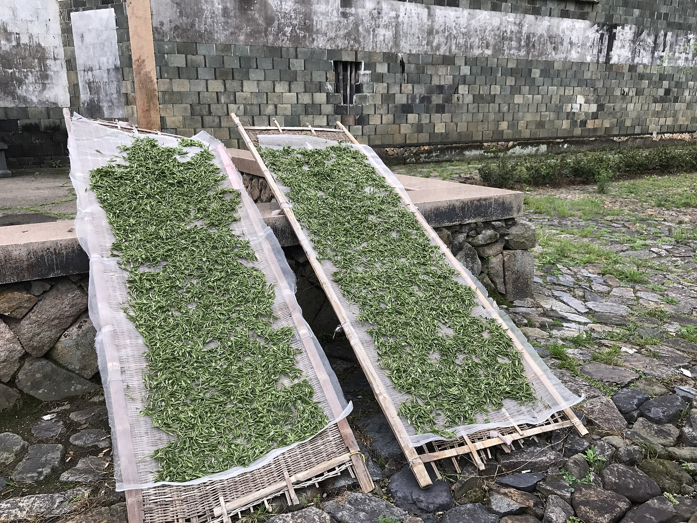
这家酒店的本质是「住在白茶主题街区里」：它与福鼎白茶文化博物馆同属华熙元·白茶小镇，2026-05-15 同日开业；博物馆“五感”展陈（2015–2025 年份茶饼实物对比、汉—清历代茶器）+ 闽东非遗展就在步行圈，酒店自带畲族元素大堂和“茶语汤泉”（白茶包入池）。代价：点头镇夜里安静，想吃夜宵要去 15 公里外的福鼎市区。
🚗 从酒店出发去各处（距离为 OSRM/官方口径估算，车费除注明外未核实）
· 福鼎站 → 酒店：福鼎点头线公交途经火车站（约 10 分钟一班，06:20–20:50，按里程计价、上车问司机）直达点头镇区，约 10 公里；打车约 15 分钟（估 25–35 元）
· 酒店 → 福鼎市区：点头线到汽车南站（15 公里）再打车 3 公里进城；或直接打车约 20 分钟
· 酒店 → 太姥山集散中心：无直达公交，打车约 30 公里 / 40 分钟（带行李上山推荐）；公交绕南站换班车约 1.5–2 小时
· 酒店 → 渔井码头（去嵛山岛）：打车约 50 公里 / 约 1 小时（估 150–180 元）；或点头线→汽车南站→硖门渔井班车（2019 口径 25 元 / 45 分钟，2026 须复核）
· 走路就能到：华熙元·白茶小镇（白茶文化博物馆）、洋中街茶叶街（白茶第一街）、点头茶青交易市场（镇区西头）
⚠️ 聚合站显示「福鼎 7 路停运中」（2026-09-05 快照，疑与 9/2 洪灾有关）——市区公交是否全恢复，到了以站牌为准；点头镇灾后恢复进度与国庆营业情况，建议出发前打酒店电话确认。
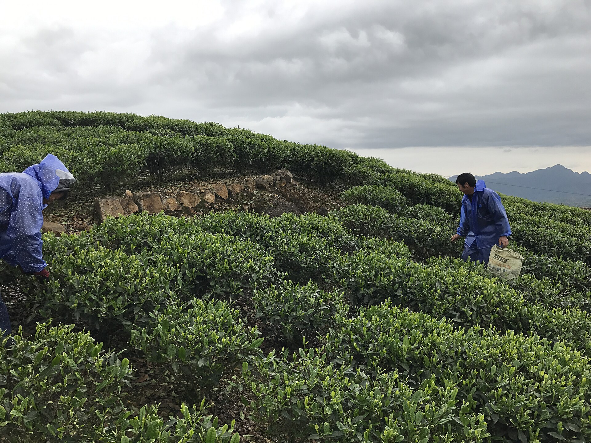

🍽️ Day 1 吃什么 · 按餐次排 （抵达日 · 点头 + 市区） 点任意一家店 → 评分 / 招牌 / 人均 / 注意
🧭 今天只做一件事：建立「茶 + 海鲜」两条味觉基线。⚠️ 点头镇 9/2 遭过洪灾，灾后近一个月；镇上餐馆若没开就回酒店餐厅解决，别硬找。
这时候你刚放完行李。镇上无平台评分店，认本地人多的：手打面、扁肉、福鼎肉片都行。点头米粉汤是早饭，09:30 前收摊，今天赶不上，排进 Day 3。
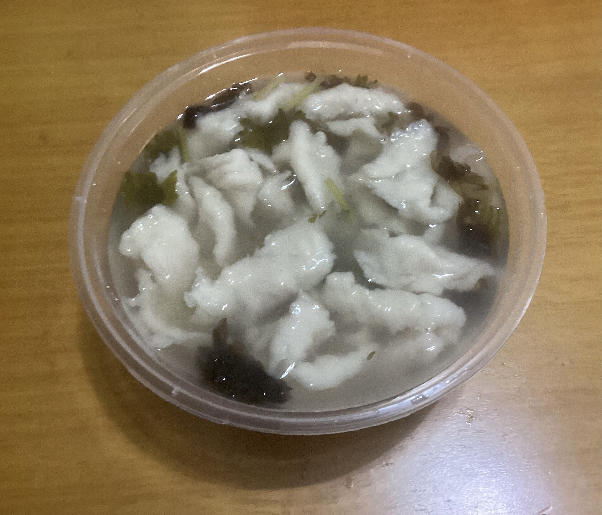
必吃非遗小吃点单指南© Hank2530 · CC BY-SA 4.0在洋中街边逛边喝：银针喝「鲜」、牡丹喝「雅」、寿眉喝「厚」、贡眉喝「特」。先喝不买，价格感建立起来再说。
 必读防坑购买指南© André Helbig · CC BY-SA 3.0
必读防坑购买指南© André Helbig · CC BY-SA 3.0东海休渔 9/16 结束，到国庆已开渔半月、渔船回港多批——正是吃海鲜的好时候；但国庆排档爆满，17:30 前到、先问时价再下单。
 ★★★★☆携程 4.0 · 42 条本地人吃© YEUalichangpsia · CC BY-SA 4.0
★★★★☆携程 4.0 · 42 条本地人吃© YEUalichangpsia · CC BY-SA 4.0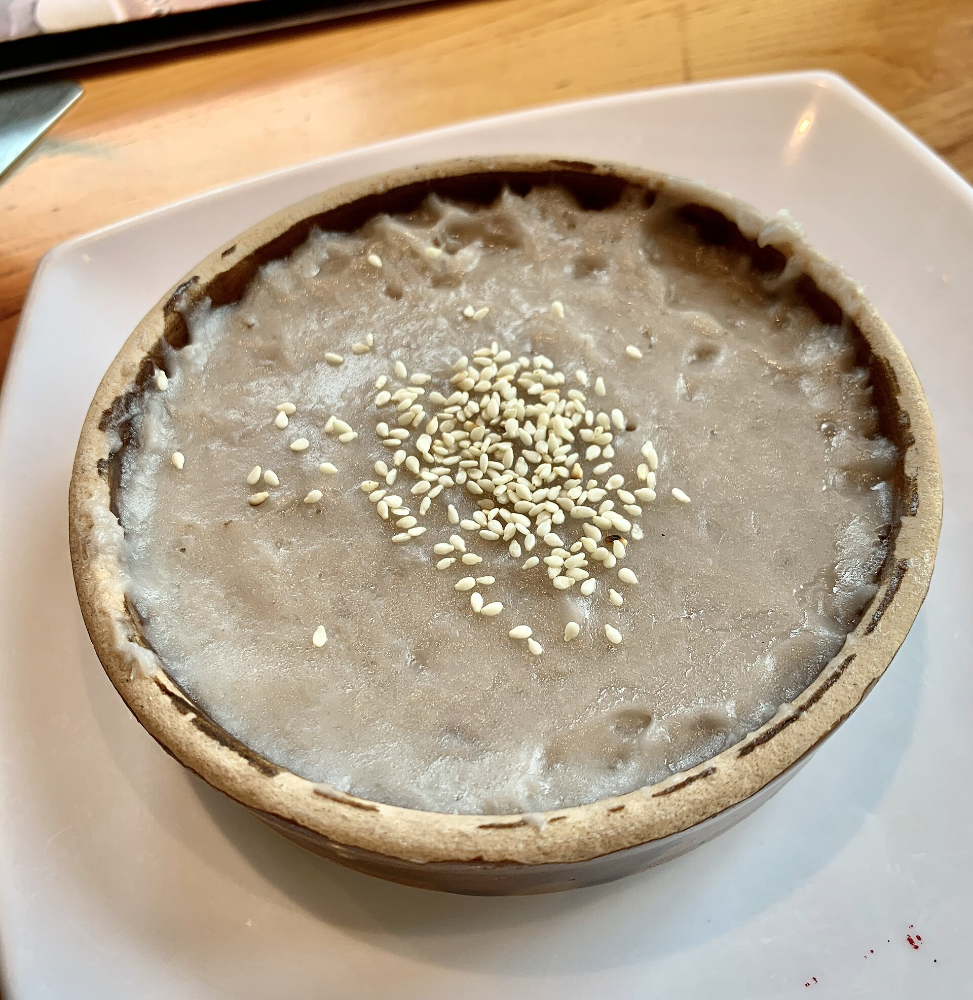
★★★★☆携程 5.0 · 32 条挂霜芋官方代表© 三猎 · CC BY-SA 4.0溪西是环线街区（西园路 + 龙溪南路），边走边吃：蜜汁鸡翅（官方十大名小吃）、白茶芋球、煎芋头糕、畲家乌米饭。褚翅（¥47，携程 3.0）评分垫底，别专程。
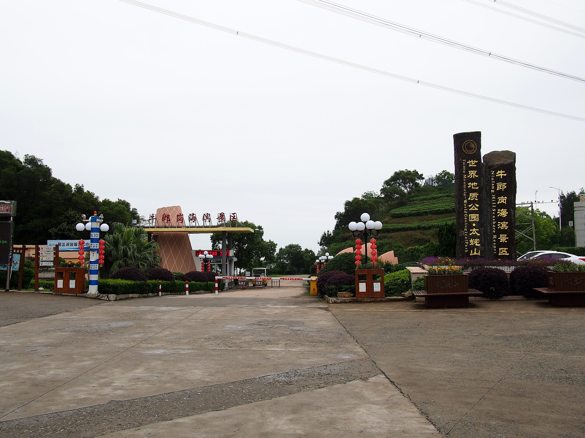

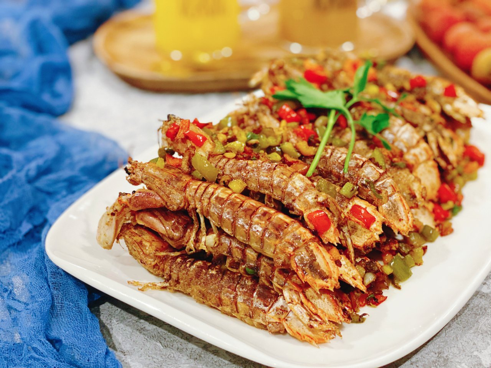
🍽️ Day 2 吃什么 · 按餐次排 （慢游日 · 点头 + 秦屿）
🧭 今天不跟船班走：早午饭都在点头镇解决，晚饭去太姥山镇放开吃。
酒店含早，自然醒后慢慢吃——今天不赶船，唯一的约定是 13:30 去牛郎岗的车。
柏柳村回来顺路。镇上小馆：福鼎肉片 + 光饼夹肉，认本地人多的店——本地论坛共识「随便走进一家店吃肉片都正宗」。吃完回酒店午休，13:30 出发去牛郎岗。
牛郎岗玩完 15 分钟车程进镇。海鲜排档人均几十（UGC），或者去阿耐吃非遗卤味。
 ★★★★☆UGC 强推本地© Balon Greyjoy · CC0
★★★★☆UGC 强推本地© Balon Greyjoy · CC0
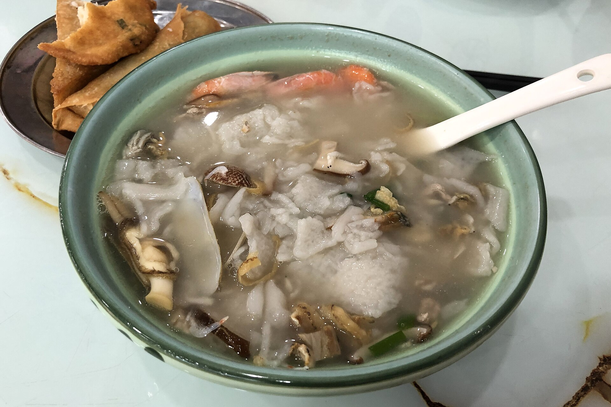
🍽️ Day 3 吃什么 · 按餐次排 （收尾日 · 点头早饭 + 秦屿午饭）
🧭 今天把「点头米粉汤」和「秦屿三老店」两个钉子拔掉。午饭在玉池南路百米内解决，吃完直接去福鼎站。
点头米粉汤是这趟必吃清单的第一名：镇上老店无平台评分，跟本地人排队。09:30 前收摊——08:30 到刚好，不用赶头锅。
这时候你刚下山取了行李。三家老店百米内扎堆：邱记的小笼包是官方「十大名小吃」代表，肉燕是秦屿人逢年过节的味道。
 ★★★★☆携程 5 条 · ¥27官方名小吃© Darrylsnow · CC BY-SA 4.0
★★★★☆携程 5 条 · ¥27官方名小吃© Darrylsnow · CC BY-SA 4.0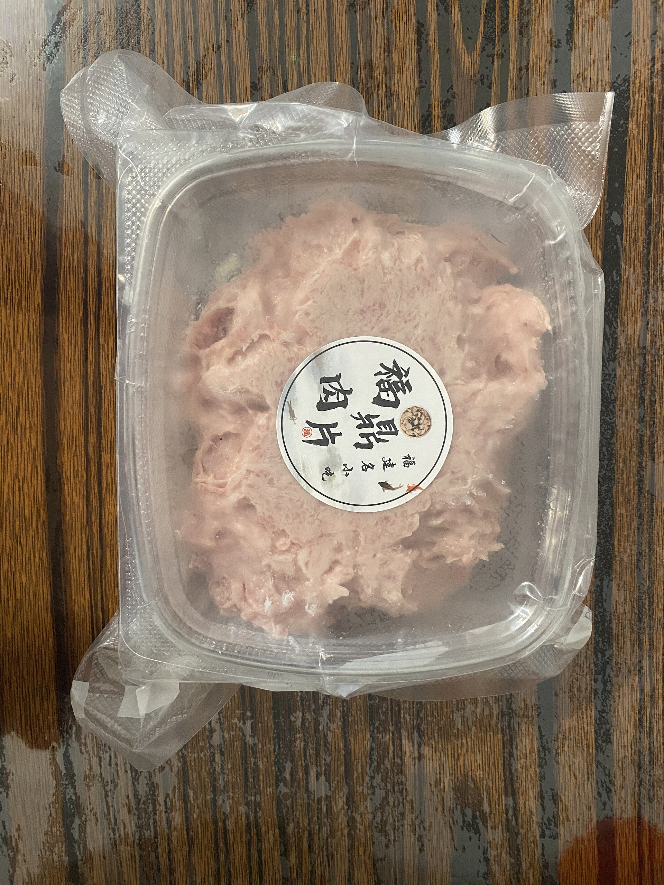
★★★★☆POI · ¥12全天开© Hank2530 · CC BY 4.0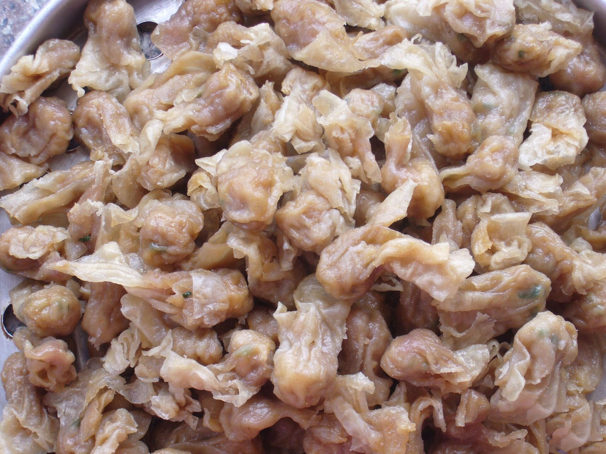
★★★☆☆UGC快© Lianxx · CC BY 3.0白茶建议 Day 1 已在点头买好；若坐 17:45 的车且想买小吃手信，可打车回市区溪西小吃街买蜜汁鸡翅、面茶糕。市区方向另有阿古牛肉丸（官方牛肉丸代表企业，¥53）可顺吃。
 ★★★★☆携程 14 条 · ¥53官方名小吃© DragonSamYU · CC BY-SA 4.0
★★★★☆携程 14 条 · ¥53官方名小吃© DragonSamYU · CC BY-SA 4.0交通票券怎么买 2026-09 已核对
价格均为人民币（元），核对日期 2026-09-15。🎫 国庆车票：去程（10/1）9/17 10:45 开售、回程（10/3）9/19 18:00 开售，定闹钟 + 没抢到立刻挂候补。💱 换算速查（慢游版主线）：太姥山套票 + 牛郎岗 ≈ 138 + 38 = 176 元/人；买太姥山+牛郎岗联票（¥150）则 150 元/人。若临时起意上嵛山岛（备选），再加往返船票 120 + 天湖门票景交约 76 ≈ +196 元/人。高铁往返以杭州为例 ≈ 201 + 233 = 434 元/人。
评分数据 & 复查后撤下的店 数据怎么念 · 撤下名单
📊 这张表怎么念：评分与「人均」全部来自携程美食 POI（2026-09-15 抓取），5 分制，人均为「用户反馈」口径；大众点评/美团在本环境抓不到，只有携程一个平台。福鼎餐饮点评普遍只有 1–42 条——5 条样本的 5.0 分不等于「必吃」，只代表「目前没人给差评」。推荐指数 ★ 是综合「评分 × 顺路 × 样本量」的主观打分。UGC（游记/帖）一律标注，不与平台评分混用。
📷 关于封面图：全部来自 Wikimedia Commons 自由授权；部分是同店实拍、部分是同类菜品参考图（图注写明），以店名与评分为准。
🚫 复查后撤下推荐（附真实评分，别专程去） 2026-09 复查；点开仍可看原始数据
⚠️ 这趟的避坑清单 先看这几条
- 灾后一个月，确认仍要做：9/2 台风「沙德尔」重创点头镇（洋中街被淹、泡水茶集中销毁），太姥山/嵛山岛 9 月中旬已恢复；出发前打酒店电话确认镇上情况，景区开闭以「太姥山旅游」「生态旅居 美岛嵛山」公众号当日公告为准。点开看
- 嵛山岛已过滤为备选（别勉强）：船班缩减后渔井进岛只有 09:00/14:00、出岛只有 07:30/13:20（9/14 通告，国庆加班以最新公告为准），当天往返必须 07:00 从点头出发、船票只能码头现场排队买；2025 国庆前 3 天进岛破 3 万人次、船票一度溢价——与「不早起」冲突，本攻略降为备选彩蛋；若上岛，误了 13:20 只能住岛（全满且贵）。点开看
- 10 月初仍是台风季尾端：海上大风会临时停航（9/2 有先例）；25 号台风「杜鹃」或影响中秋前后，后续新台风每天看路径；万一天气不配合，D2 下午的海边改室内：酒店茶语汤泉 + 白茶小镇/博物馆 + 洋中街喝茶买茶，就是完整一天。点开看
- 太姥山一线天最窄 20–30cm：侧身收腹，胖友/大包量力而行；国庆 10:00–14:00 高峰排队 1h+——慢游版不赶早，排队超 40 分钟就放弃，改走观海栈道景色不亏。点开看
- 太姥山必须集散中心换乘：2017 年起一律在洋里集散中心换景交车；无索道，园内有观光车/扶梯/轨道车。点开看
- 山上物价：官方称九鲤湖/白云寺小卖部「经济实惠」，2020 实测矿泉水最便宜 5 元/瓶；别背太多水上山。点开看
- 点头米粉汤 09:30 前收摊：想吃放早上（本攻略排 Day 3 早饭）；镇上具名老店未查到，跟本地人排队。点开看
- 茶青市场是批发市场：看热闹可以，零售买茶去洋中街/品牌店；买茶认「福鼎白茶大数据溯源」一品一码（可查产地、生产者、检验报告）。点开看
- 老白茶做旧重灾区：换包装改年份、渥堆高温做旧两类手法；四步鉴别——叶色要「花」不要全黑、闻有无霉味酸味、叶底要柔软有韧性、汤感要厚滑像米汤。口粮买当年新茶最稳。点开看
- 「中国白茶城」在政和，不在福鼎：有人拿这名头带路，直接拒绝。点开看
- 海鲜先问价：称重前确认价格与做法；开渔半月渔获正肥，但国庆时价天天变、排档爆满。点开看
- 国庆票 9/17、9/19 开售 + 看清经停站：去程 10/1 票 9/17 10:45、回程 10/3 票 9/19 18:00 开售，没抢到立刻挂候补；杭州→宁德的车多数走金温线跳过福鼎/太姥山，直接买到「福鼎站」（13 班直达）。点开看
- 点头线末班 20:50：市区逛晚了就打车（15 公里）；嵛山岛、秦屿回点头都要打车，备一个本地司机电话。点开看
- 台风天退房有维权案例：福鼎有游客台风天退房被拒的黑猫投诉记录；若因天气/停航行程变动，订单截图存证，12315 小程序投诉。点开看
- 备现金：码头、镇上小摊用得上；若上嵛山岛（备选），天湖草场信号弱（UGC），进岛前下好离线地图。点开看
行前必查清单 出发前 1 天逐条过
✅ 必做六件事：① 定两个闹钟抢国庆票：9/17 10:45 抢去程（首选 G3091 杭州西 07:55→福鼎 10:28）、9/19 18:00 抢回程（G3060 16:25 / G3022 17:45），没抢到立刻挂候补（6 订单 × 3 日期 ≤60 组合）；② 打酒店电话确认点头镇灾后恢复、问清国庆早餐开餐时间，并约 D2 下午 13:30 去牛郎岗的车（约 45 公里）；③ 「太姥山旅游」公众号买太姥山 138 套票（刷身份证入园）；④ 若临时起意上嵛山岛（备选），再打通达轮船 13850320670 确认班次、海况与国庆是否加班；⑤ 出发前 3 天起每晚看台风路径预报 + 两个景区公众号（台风季尾端）；⑥ 带：外套（山上/海边风大）、防晒、防滑鞋（太姥山一线天）、少量现金、充电宝。
📸 图集 · 这趟会看到的画面 实拍参考

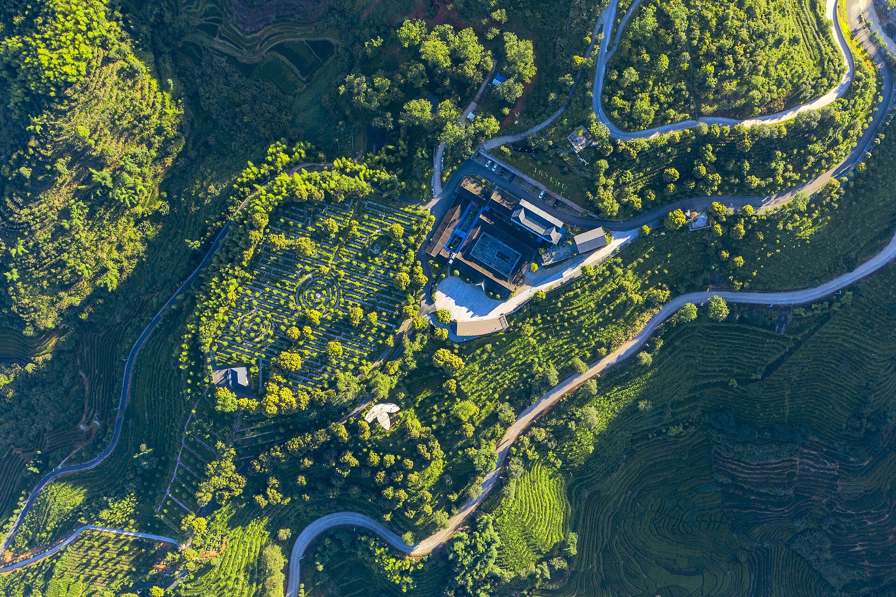
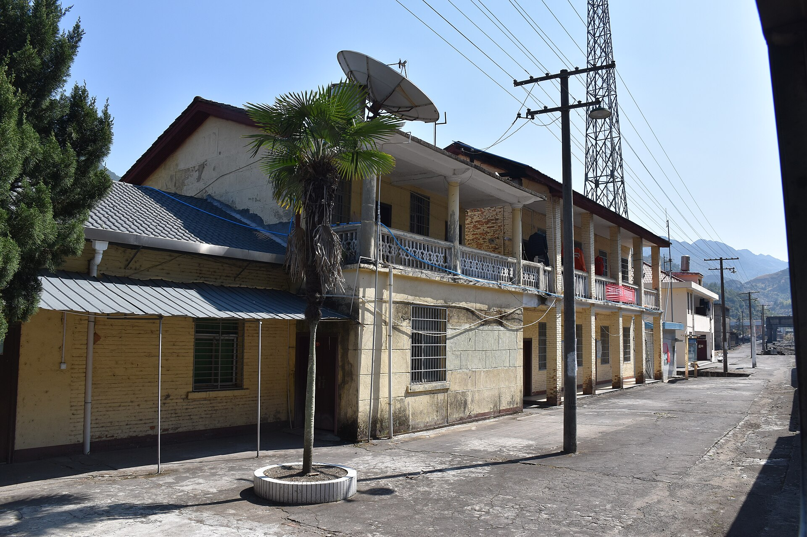
全部图片来自 Wikimedia Commons，采用 CC0 / CC BY / CC BY-SA 授权，作者与授权见每张图说明及 images/credits.json。
A 级数字均来自政府/运营方官方页面；台风灾后信息以「太姥山旅游」「生态旅居 美岛嵛山」公众号当日公告为准